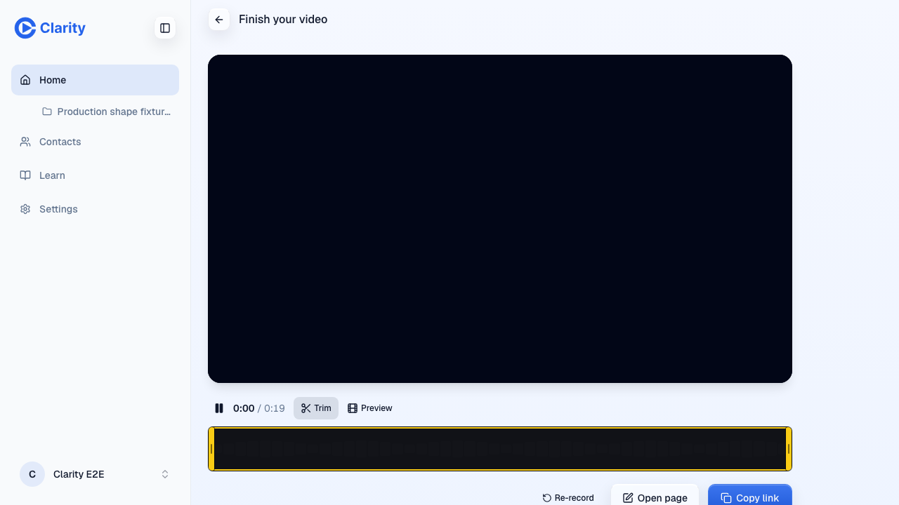
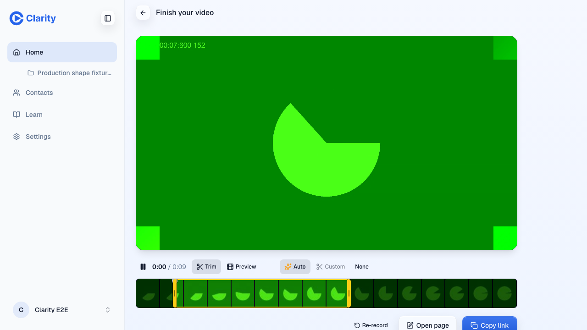
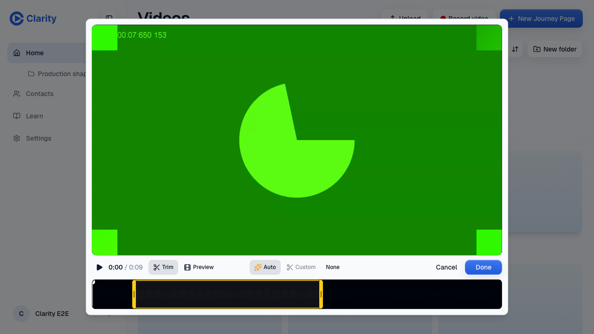
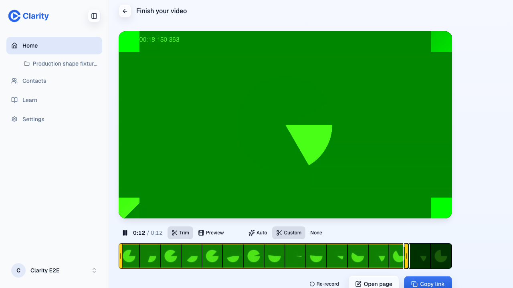
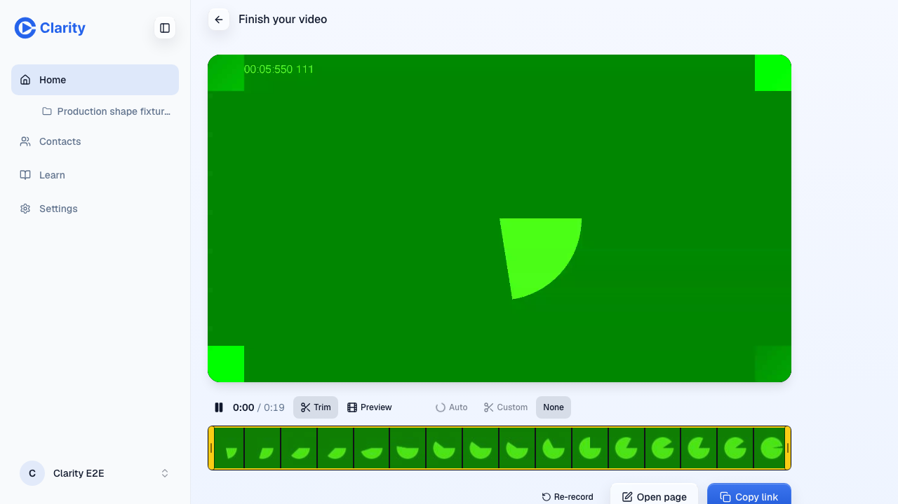
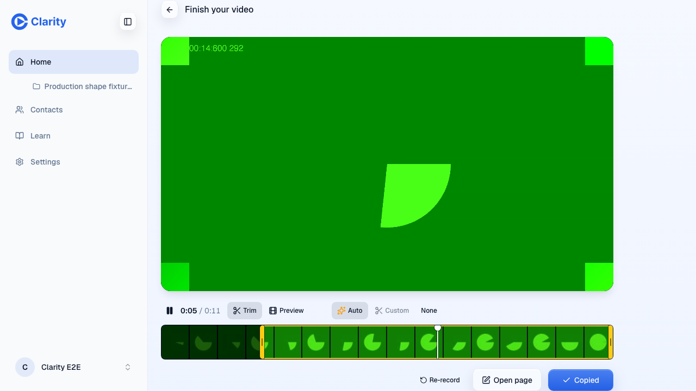
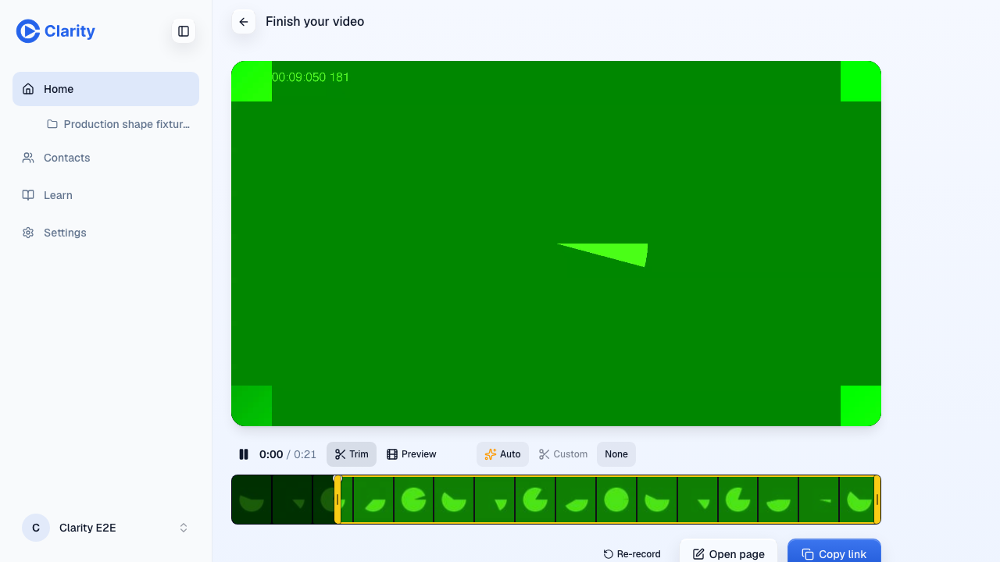
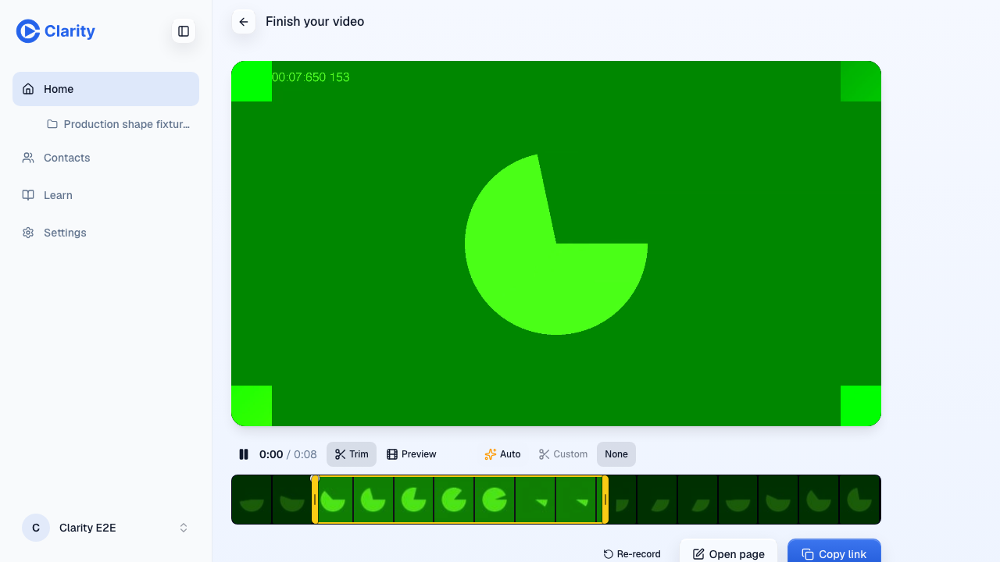

VERIFIED
This is the preview pass on PR #1368 (https://pr-1368.clarity-video.workers.dev), rebased head 1deb5cefd, 2026-10-08. The author's evidence run and the independent check both pass. The independent check (a fresh Opus agent with its own Playwright driver) ran on head bc9d1ad0d. The rebase onto main db802e37e left five of the six commits patch-identical. The sixth commit changed only a test-file conflict, and the author reran the evidence on 1deb5cefd.
| Check | Result | Note |
|---|---|---|
| Auto at Stop, speech takes | pass | Independent: median 509 ms over 8 takes (449 to 1627 ms). Author, on the rebased head: 25 s take 644 ms, 20 s gap take 470 ms. Author, on bc9d1ad0d: 482 to 642 ms. |
| Persistence as a machine trim | pass | Gap take on the rebased head: D1 has auto_trim 2.56 to 11.556 s, source: recorder, and the job is done: committed. Independent: the library Edit modal opens with Auto pressed after a reload. |
| Human trim or None wins | pass | Independent, in three orders: None before ready, None after the machine commit, and a drag before Auto arrived. D1 has human_trim_closed and no machine overwrite. |
| Silent take | pass | Auto is never pressed, and the job settles as no_evidence. |
| Adjacent: Copy link, Open page, preview-only edit | pass | The link is copied, the page editor opens, and a Preview, then Still edit leaves the trim alone. |
| Eval, 45 production takes | pass | All 36 English takes get edges. Median error is 0.12 s at the start and 0.07 s at the end. 3 non-English takes abstain, and 0 of 6 silent takes give a false positive. |
| Root checks on the rebased head | pass | typecheck, lint, test (frontend-router 198, workspace-tree 542, editor 4027, scripts 348), and the LOC ratchet. |
| Slow cases | warn | 2 of 8 independent takes took about 1.5 s of server time. Production RUM decides this, and #1359 stays open. |
| 409 on the first human edit after a machine trim | warn | The finish screen's asset lookup sends a node id, the pre-existing /tree/assets lookup expects an asset id, and so it returns 404. A retry saves. Filed as a follow-up. |








GET /api/tree/assets/<nodeId> after a machine trim saves. It comes from the pre-existing asset-node query; see the warning above.ERR_ADDRESS_UNREACHABLE because the test machine's network kept dropping. Every take still reached ready.POST .../speech/window?seek=first|last 200, POST .../speech/recorder 202, and GET .../speech polls with autoTrim and autoTrimPending.